- 

-
When did you become interested in design?
Around the age of 6, I remember watching my Dad play SimCity and being so excited by the colors, sound, and interactivity. The importance here cannot be understated- the experience of playing and designing functioning cities was what first genuinely excited me about technology, utility, and design. By the time I had my own computer- I began building Homestead websites, designing album covers, digging through AltaVista and playing [RPG] forum games.
-
“The idea that growth happens outside of your comfort zone...”
-
What is your background?
Uprooting and starting over has always been a constant theme. At the age of 16 I began working and ventured out on my own. As I grew older, I frequently relocated throughout the country causing my passion for technology to fall by the wayside. In retrospect, this helped me to understand that failures are opportunities to iterate and problem solve. I learned to embrace shortcomings and unfamiliarity. I've come to understand that these events were never actual setbacks but a chance to reiterate, improve, and strive toward my goals.
-
“...it’s in the size of a space and how to design for efficiency & purpose.”
-
How does this relate to your design process?
Until now, I have been satisfied with writing, drawing, and designing as a hobby. I learned how to cook at a young age and realized I enjoy creating dishes and making people happy. For a period of time, I focused my career on doing just that. There are many traits that developed throughout this time that are worth mentioning, but the most important takeaway was how much cooking and service work correlate with the User Experience. In short, from food-pairings to community outreach and product branding, I started seeing these connections and how design is applicable to my other interests in life. Beginning my first UX projects, I started to notice these patterns all around me. From a blank artboard to an empty apartment or full pantry- it’s the placement of objects and the way colors affect mood- it’s in the size of a space and how to design for efficiency & purpose.
-
What are your goals as a designer?
As a designer, I value a minimalist aesthetic utilizing geometry, symbolism, and perfection of natural patterns. I want to provide this support with the efficiency of geodesic domes designed with a strong sustainability focus. As my heart genuinely rings when helping others- it is the disadvantaged, under-resourced and mental health clients that I am focused on working with. In essence, I'm driven by the idea of having a calculated reason why something is visually attractive. While art and truth may be subjective - it’s the area between aesthetic and utility where I balance my world-view and future ambitions.